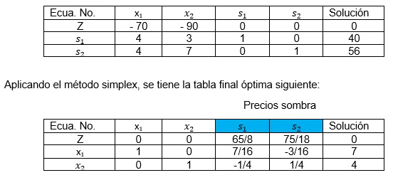
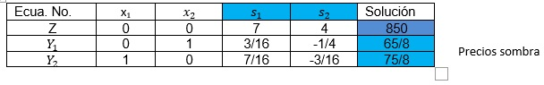
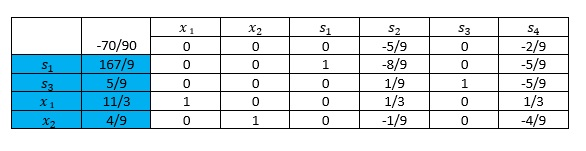

Un problema de programación lineal está destinado a la optimización de determinados recursos económicos [5]. Los problemas “primales” consisten en maximizar una función objetivo sometido a un conjunto de restricciones representadas por inecuaciones. La interpretación económica de estos valores es la siguiente:
- Las variables xi pueden interpretarse como los términos desconocidos de los productos que se fabricaran.
– Los bi son las cantidades disponibles de recursos para elaborar los productos.
– Los términos aij son las cantidades necesarias del recurso i para producir una unidad del producto j.
- Las restricciones representarán la limitación de los recursos disponibles para fabricar los productos.
- El objetivo del fabricante será obtener un beneficio máximo, o sea, maximizar los beneficios, con lo cual cj serán los beneficios por cada unidad producida del producto j.
A partir de las relaciones primal-dual se interpretará económicamente los términos del anterior:
- yi: Contribución a la ganancia por cada unidad del recurso i. Estas variables del problema dual reciben el nombre de precios de sombra.
- yi>=0: La ganancia por cada unidad del recurso i, debe ser no negativa, de lo contrario sería mejor no utilizar este recurso en absoluto. - F. Objetivo: Es la minimización total del valor implícito de los recursos consumidos por las actividades.
En general el precio sombra de una restricción proporciona el cambio en el valor de la función objetivo como resultado de un cambio unitario en el término independiente de la restricción, suponiendo que el resto de los parámetros del problema permanecen inalterados.
En muchos problemas de programación lineal los precios sombra son tan importantes como la solución del problema, ya que proporcionan información sobre el efecto en la función objetivo de cambios en los recursos disponibles.
Ejemplo 1.
Una consultora de software desarrolla dos bases de datos bd-1 y bd-2, bd-1 necesita 4 gb de espacio en la nube y 4gb en disco duro; la bd-2 necesita 3 gb de espacio en la nube y 7 gb en disco duro. La disponibilidad de espacio en la nube y en disco duro es de 40 y 56 gb respectivamente. La base de datos bd-1 representa un beneficio de 70 y la bd-2 de 90 dólares.
x1 y x2, son la cantidad de bases de datos a desarrollar, por lo que el problema de programación lineal sería:
Maximizar: 70 x1 + 90x2
s.a. 4x1 + 3x2 ≤ 40
4x1 + 7x2≤ 56
i≥0
Agregándole sus respectivas variables de holgura (s) se tiene:
Maximizar: 70 X1 + 90x2
s.a. 4x1 + 3x2 + S1 = 40
4x1 + 7x2+S2 = 56
Xi≥0
Su correspondiente tabla inicial simplex:

Elaboración propia
La solución óptima obtenida por el método simplex establece que se tienen que desarrollarse diariamente 7 bases de datos bd-1 y 4 bases de datos bd-2 respectivamente, lo que da lugar a un beneficio de 850 dólares, porque:
Maximizar: 70 (7) + 90 (4) = 850
Este resultado indica que ambos espacios en disco duro y en la nube se están ocupando plenamente, porque los dos son obligatorios.
Donde:
s1= 65/8 siendo lo más que se puede ocupar de espacio en disco duro en para la base de datos bd-1.
s1 = 75/8 8 siendo lo más que se puede ocupar de espacio en la nube para la base de datos bd-2.
Si se quiere aumentar el beneficio diario, es necesario aumentar la capacidad productiva, por eso si se piensa aumentar la capacidad de espacio en la nube de 56 a 72 gb. ¿Cómo afecta esta ampliación de capacidad a los beneficios diarios? La solución puede obtenerse mediante Análisis de Sensibilidad y el método dual del simplex que se verá posteriormente.
En muchos problemas de programación lineal los precios sombra son tan importantes como la solución del problema, ya que proporcionan información sobre el efecto en la función objetivo de cambios en los recursos disponibles. Los precios sombra pueden obtenerse resolviendo el problema dual, como sigue:
Modelo original
Maximizar: 70 x1 + 90x2
s.a. 4 x1 + 3x2 = 40
4 x 1 + 7x2= 56
Xi≥0
Transformándolo a su respectivo problema dual quedaría:
Minimizar: -40 Y1 - 56Y2
s.a. -4Y1 -4Y2+s1≥ -70
-3Y1 - 7Y2+s2≥ - 90
Xi≥0
Y aplicando el método dual simplex (que se verá posteriormente) se tiene como solución óptima:

Elaboración propia
y1 = 65/8, y 2 = 75/8, y el valor óptimo de la función objetivo es 850, donde se puede ver que
Y1 y Y2 son los precios sombra de las capacidades de almacenamiento en disco duro y de almacenamiento en la nube respectivamente, y que los valores óptimos de la función objetivo de los problemas primal y dual coinciden.
Ejemplo 2.
Una empresa ensambla dos tipos de computadoras, de escritorio y laptops. Las computadoras de escritorio contienen una memoria ram y las laptops contienen dos memorias ram.
Con la venta de cada computadora de escritorio, la empresa tiene un beneficio neto de 2 dólares por la memoria ram e igualmente, la empresa tiene un beneficio neto de 1 dólar por las memorias ram de las laptops. Ambas computadoras se ensamblan en dos talleres A1 y A2, de los cuales se dispone de un total de 30 y 16 horas semanales respectivamente. Cada computadora de escritorio requiere de 3 horas de ensamble en A1 y 4 horas en A2. Las laptops requieren de 1 hora de ensamble en A1 y 3 horas en A2.
El compromiso es entregar al menos 4 computadoras semanales de cualquiera de las dos, además la empresa usa un camión de entrega donde emplea 1 hora para las computadoras de escritorio y 3 horas para las laptops. La empresa debe ocupar al menos 5 horas de mano de obra del para conducir el camión.
Modelo original
Maximizar Z = 2 x1 + x2
sujeto a:
3x1 + x2≤ 30
4x 1 + 3x2≤ 16
x 1 + 2x2 ≥ 4
x 1 + 3x2 ≥ 5
xi≥0
Agregándole sus correspondientes variables de holgura para aplicar el método simplex, quedaría:
Minimizar: 2x 1 + x2
s.a. 3x 1 + x<2 +s1=30
4x 1 + 3x2+s2= 16
x 1 + 2x2 +s3= 4
x 1 + 3x2 +s4= 5
Xi≥0
La tabla final óptima quedaría como se muestra a continuación.

Elaboración propia
Los resultados óptimos serían:
Se venden en promedio 11 computadoras de escritorio cada 3 semanas (x 1 = 11/3) y en promedio 4 computadoras portátiles cada 9 semanas (x 2 = 4/9)
Por lo tanto, se tiene una ganancia semanal de $7.78 dólares.
s1 = 167/9, por lo tanto, el taller A1 no se ocupa a su máximo, ya que solo se ocupan 18.5 horas del total de 30 horas.
s2 = 0, por lo que el taller A2 se ocupa a su máximo toda la semana que son 16 horas.
s3 = 5/9, por lo tanto, se ensamblan 0.56 computadoras más del mínimo comprometido
s4= 0, se emplea el número mínimo de horas para transportar las computadoras.